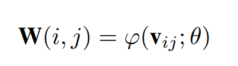

SISR
GAN
SRGAN (CVPR2017)
训练网络时用均方差作为损失函数，虽然能够获得很高的峰值信噪比，但是恢复出来的图像通常会丢失高频细节，使人不能有好的视觉感受。
MSE代价函数使重建结果有较高的信噪比，但是缺少了高频信息，出现过度平滑的纹理。
损失函数
ESRGAN (ECCV2018)
改进感知域损失函数，使用激活前的VGG特征，这个改进会提供更尖锐的边缘和更符合视觉的结果。
GAN网络改进为Relativistic average GAN (RaGAN)
网络的基本单元从基本的残差单元变为Residual-in-Residual Dense Block (RRDB)
当训练集和测试集的统计量有很大不同的时候，BN层就会倾向于生成不好的伪影，并且限制模型的泛化能力。作者发现，BN层在网络比较深，而且在GAN框架下进行训练的时候，更会产生伪影。这些伪影偶尔出现在迭代和不同的设置中，违反了对训练稳定性能的需求。所以为了稳定的训练和一致的性能，作者去掉了BN层。
对残差信息进行scaling，即将残差信息乘以一个0到1之间的数，用于防止不稳定
损失函数
SROBB (ICCV 2019)
mid-level信息：纹理信息
low-level信息：边缘信息
浅层网络提取感知信息：适用边缘，纹理处模糊
深层网络提取感知信息：适用纹理，图片引入噪声
低层的特征对于重建边来说是更有效的，中间层的特征对于重建纹理来说是更有效的
分区域：
背景：天空、植物、地面和水，这些区域主要包含的是纹理信息，用符号background表示，其对应的是mid-level特征。边界：区分物体和背景的边，这些区域主要包含的是边和块信息，作者通过处理拓宽了这些区域，用符号boundary表示，其对应的是low-level特征。
物体：除了上面所说的背景所包含的4类，用符号object表示，其对应的是high-level特征。
区域区分
感知损失函数
网络结构（延用SRGAN）
RankSRGAN (ICCV 2019)
创新点：将不可微的图像感知质量指标通过Ranker模块转化为可微可优化的值
网络架构
Stage1：生成成对的带有排序标签的图像（rank images）。通过不同的 SR 方法对公开的SR 数据集进行处理，生成超分辨率图像，然后对这些图像用所中的感知指标（如 NIQE）进行评价得到质量评价得分，接着根据分数对成对图像进行排序。按照得分高低，图像的排序标签分别为1~n（1表示最好，n则为最差）。这里选择的SR 方法为 ESRGAN 和 SRGAN，数据集则是 DIV2K 和 Flicker2K。
Stage2：训练 Ranker，也是论文核心的创新点。论文采用了孪生神经网络结构，网络分支共享权值。同时提出了 margin-ranking loss，对 Ranker 进行优化。训练后的Ranker具有根据图像的感知得分对图像进行排名的能力。
Stage 3: 引入 rank-content loss。当Ranker训练完成之后，Ranker 作为一个评价网络生成 rank-content loss。生成的图像输入Ranker中以预测排名分数。rank-content loss 定义如下：
最终的网络结构中，网络结构与 SRGAN 相同，不过引入了额外的 Ranker-content loss。
Autoencoder
SAN （CVPR 2019）
CNN模型限制：
大多数基于CNN的SR方法没有充分利用原始LR图像的信息，导致相当低的性能
大多数CNN-based models主要专注于设计更深或是更宽的网络，以学习更有判别力的高层特征，却很少发掘层间特征的内在相关性，从而妨碍了CNN的表达能力
模型结构：
NLGR: 区域级非局部模块RL-NL + 一个同源残差组结构SSRG
同源残差连接：把LR的特征加到每个group的输入x中，这种连接不仅可以帮助深度CNN的训练，同时还可以传递LR图像中丰富的低频信息给high-level的层
RL-NL模块
将图像划分为kxk大小，在每个region中进行non-local操作
local：针对感受野
conv、pooling：local
FC：non-local，global
Non-local block：
mask由相似性给出
g是一个映射函数，将一个点映射成一个向量，可以看成是计算一个点的特征
SSRG: G个局部模块LSRAG + 同源残差连接结构SSC
所谓同源残差连接，就是把LR的特征加到每个group的输入x中，这种连接不仅可以帮助深度CNN的训练，同时还可以传递LR图像中丰富的低频信息给high-level的层
LSRAG：
与NLGR不同，采用local的残差连接，非同源残差连接
SOCA：二阶通道注意力机制，得到通道注意力
SRFBN （CVPR 2019）
回传（RNN，常见的直接前向传递模块的弊端是前面的层无法直接利用后面层的信息）
循环迭代T次，每次迭代都计算loss值，T次迭代后平均loss更新权重

反馈模块（综合HR与LR信息）

缺点：计算量过大，demo阶段仍需要多次循环迭代
Meta-SR (CVPR 2019)
提出一个动态预测每一缩放因子的滤波器权重的新网络，从而无需为每一缩放因子存储权重，取而代之，存储小的权重预测网络更为方便
包含两个模块：特征学习模块和 Meta-Upscale 模块，后者的提出用于替代传统的放大模块
Meta-Upscale
1) Location Projection： 把像素投射到 LR 图像上，即找到与像素（i, j）对应的像素（i′, j′）
向下取整
2) Weight Prediction： 为 SR 图像上每个像素预测对应滤波器的权重
应用meta-learning （为何 Vij 使用偏差表示？）

3) Feature Mapping：利用预测得到的权重将 LR 图像的特征映射回 SR 图像空间以计算其像素值
RefSR
CrossNet (ECCV 2018)
将参考HR图像的高频细节迁移到LR图像
本文提出一种端到端的全卷积神经网络，使用了跨尺度扭曲，包含图像编码器，跨尺度扭曲层和融合解码器：编码器主要用于提取参考图片和LR图片的多尺度特征，
跨尺度变形层用于将参考的特征图和LR特征图进行空间对齐，
解码器将这些特征图进行合并从而生成HR图片。
网络结构

损失函数
综合
SRNTT (CVPR 2019)
SISR：
纹理不够清晰
加上感知损失，纹理清晰了但是大多是捏造的，不符合真实情况
RefSR：
Ref需要跟LR足够相似
只学习了Ref的像素级特征，或者一些浅层的特征
Ref需要与LR对齐的
通过在特征空间上匹配的方法，将语义相关的特征进行迁移。
框架：包含局部纹理特征匹配（交换）和纹理迁移两部分
论文将输入图片与参考图片先转化为同一分辨率，随后将图像分块计算。
swap：找到参考图片中与输入图片相似度（内积）最大的块，并替换输入图片中对应块，输入纹理转换
纹理迁移
损失函数
重构损失：
感知损失：
对抗损失：
纹理损失：
数据集 成对数据集（需要ref）